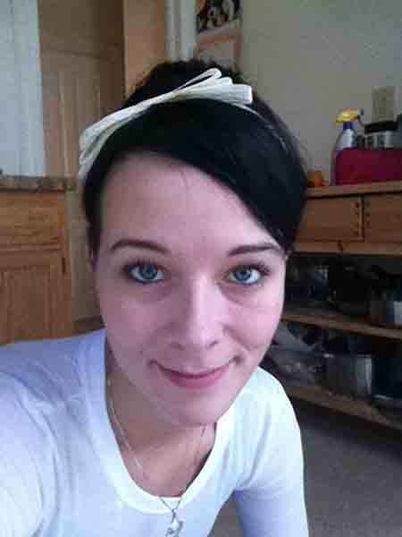

Vienna Marie Sprenkel
Objective: To obtain a position with your firm.


Applicable Skillset
- Proficient with Adobe Photoshop.
- Proficient with Adobe Illustrator.
- Proficient with Adobe InDesign.
- Creative Suite experience from CS3 through CS7.
- Proficient with current HTML practices.
- Proficient with current CSS practices.
- Well versed at working with clients.
- Advertising sales experience.
- Dilligent.
- Efficient.
- Hardworking.
- Quick to learn anything required for the job at hand.
- Attention to detail.
- Able to meet deadlines and work in a fast-paced environment.
- Dedication to the project(s) at hand.
- Time management skills.
- Editing expertise with a Linguistics Minor.
- Public Relations experience.
- Social Media Management experience.
Biography
My name is Vienna Marie Bridges, I am starting to cultivate my soon to be married name, as my logo and webpage would suggest. I have two children and an amazing fiance, that are my world. Spencer Love, my daughter, just recently turned six. Atticus James, my son, just recently turned eight months old. Every day that I wake up, I hit the day head on so that I may build an amazing future for my family. I am a first generation graduate, from both high school, and college. I started with a two-year degree in Science so that I could become a nurse, when I finally realized I need to go for something I have always been passionate about.
I have had a passion for writing, editing, and graphic design since I was merely a teen. I was the editor of my Jr./Sr. High School newspaper for years and this cultivated my passion for all of the things aforementioned. I have completed a plethora of compositions in the past decade, both for educational purposes, and in a professional setting. I have a varied skill-set, and a wide randge of knowledge of various aspects of business. I have sold advertising in a multitude of professional settings; in addition to an array of design work I have already completed.
Ultimately, I intend on obtaining my Ph. D. in Technical Communications. Given the opportunity, I know I can become an invaluable member of your team. Professional, courteous, hard-working, and perseverant, are only a few of the qualities I encompass. With the ability to adapt to various work environments and job duties, if you chose me, I guarantee you will not be disappointed.